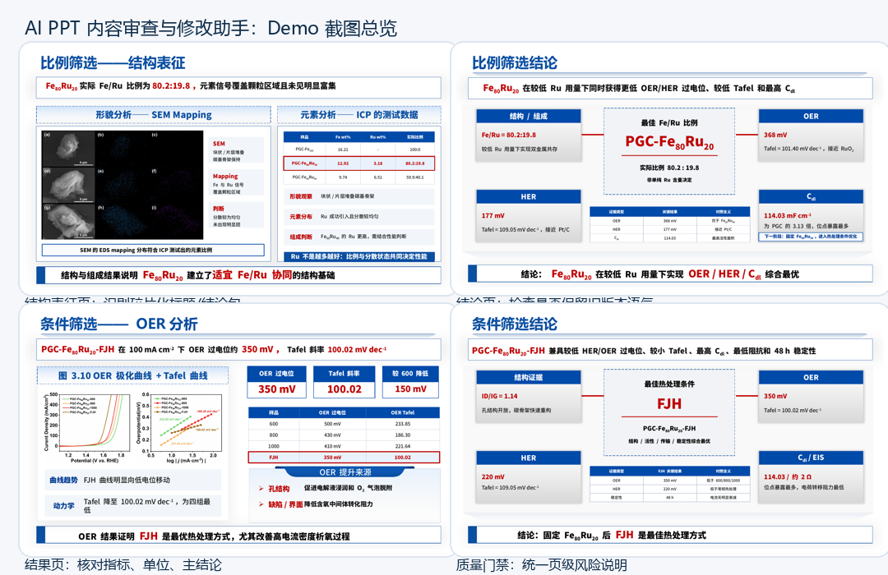
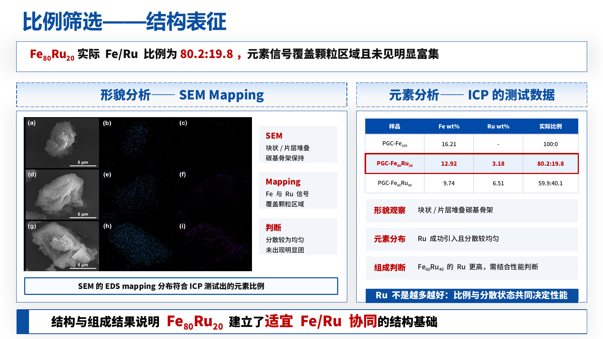
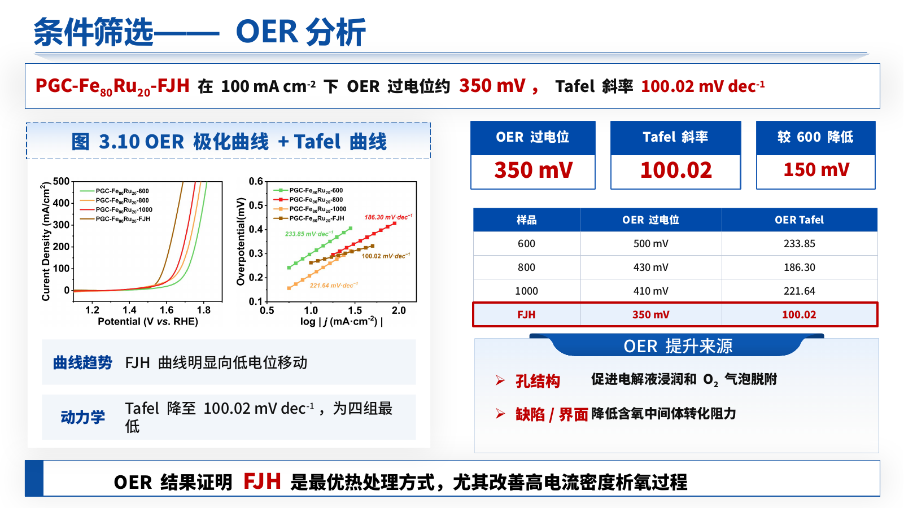
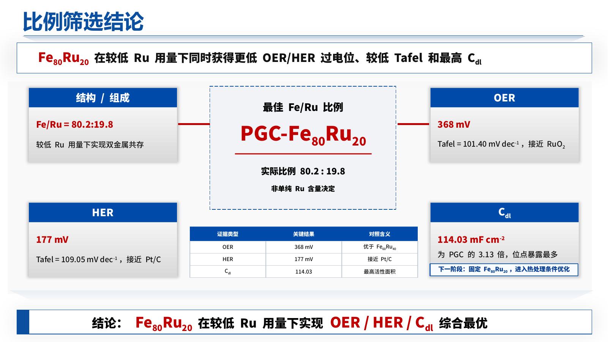
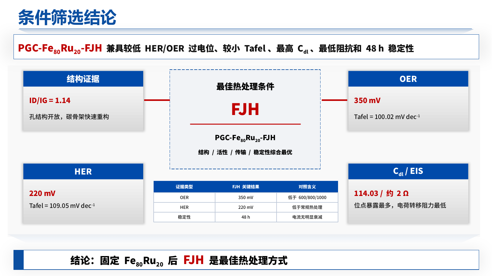

Project overview
Presentation decks are often created from older drafts, reports, or multiple rounds of revisions. As a result, the final deck may still contain outdated plans, inconsistent metrics, incorrect methods, or conclusions that no longer match the source document.
This project provides a page-level review workflow: extract slide content, detect risky or outdated expressions, compare the deck against the source material, and generate a readable HTML report for manual revision.

Core features
Extracts titles, text boxes, and page-level content from PPT files.
Flags outdated expressions, method mismatches, over-claimed conclusions, and suspicious terms.
Classifies issues into actions such as keep, revise, delete, or remake.
Generates a readable review report that can be used as a manual editing checklist.
Supports workflows for merging fragmented PPT text boxes while preserving rich text styles.
Risk keywords and review categories can be configured for different scenarios.
Demo screenshots

Slide-level content review and text-box cleanup case.

Result slide review: metrics, units, sample names and conclusions.

Conclusion slide review: outdated wording and over-claiming risks.

Quality gate: page-level issues and suggested actions.
Sample report
The sample report shows how findings are organized by slide page, issue type, priority and suggested revision.
Implementation
| Module | Description |
|---|---|
| PPT Decomposer | Extracts titles and text content from each slide. |
| Source Parser | Parses the source document structure and important facts. |
| Risk Rules | Detects outdated terms, method mismatches, data conflicts and over-claiming. |
| Report Generator | Produces standalone HTML reports for review and handoff. |
| OpenXML Helper | Preserves rich text styles when editing PPT text boxes. |